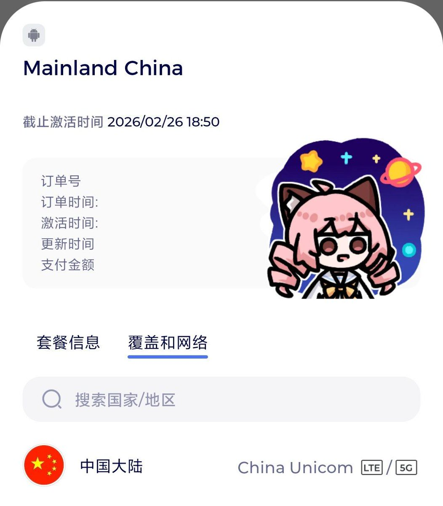
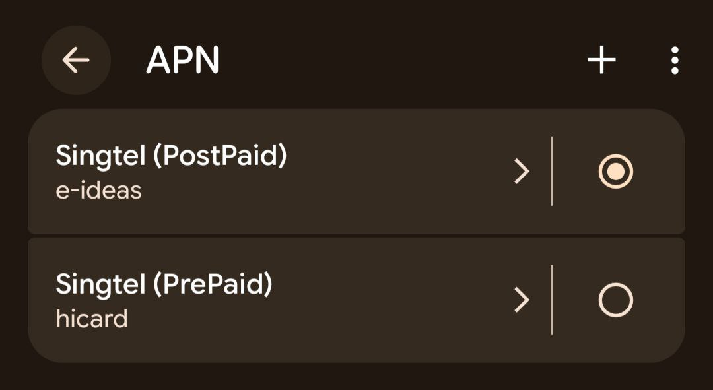
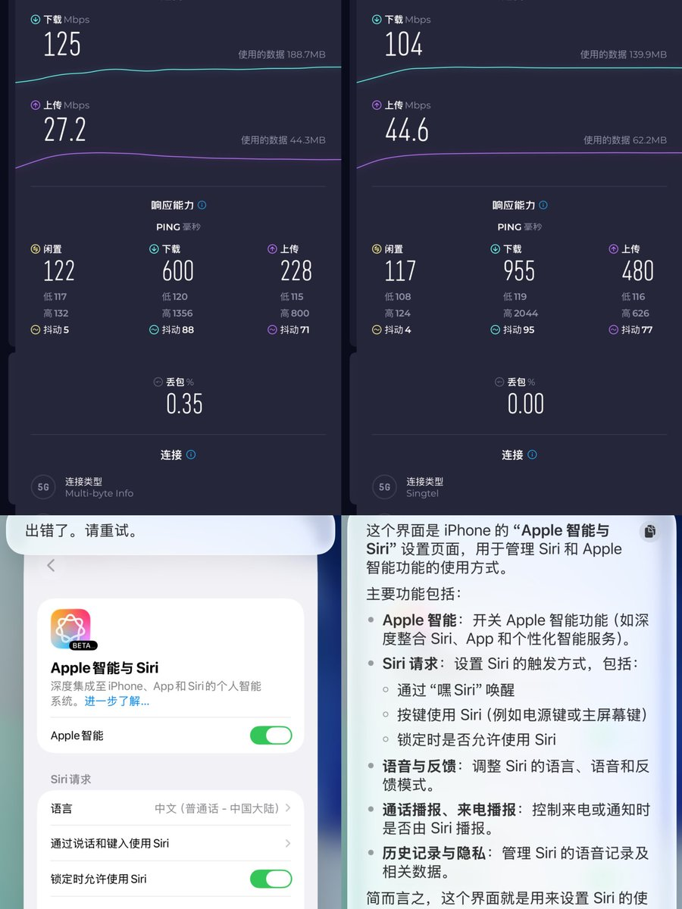
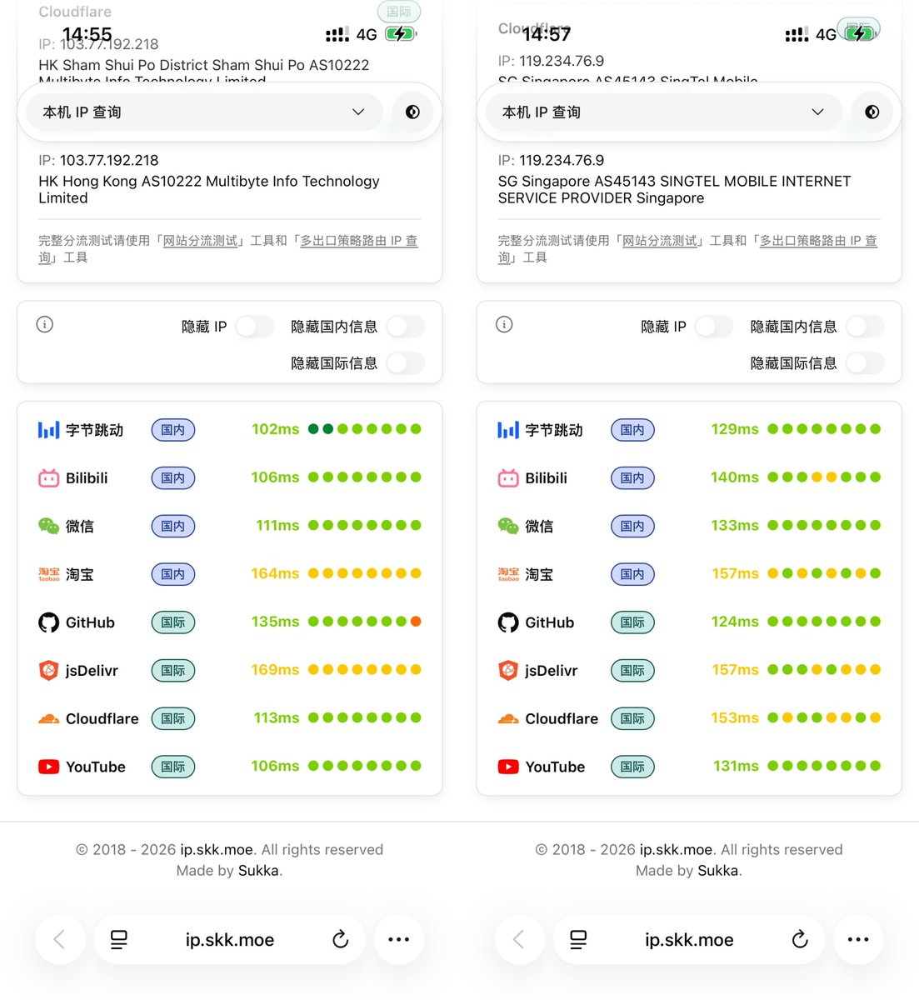

昨天红茶移动RedteaGO在奶昔论坛发起中国大陆3GB套餐测试招募，无需担心AI受限的问题！
应该是SingTel的资源，imsi 52501、iccid 896501，很纯的原生卡，境内只能漫游中国联通。
实测APN与Trip上出现的SingTel Data SIM相同，e-ideas只有IPv4地址，而hicard有IPv4和IPv6地址。
博元信息（3）和SingTel主要差别在延迟上，速度不相上下。毕竟新加坡离中国比较远，却能直接用AI，顺利的激活Apple智能与Siri。
测速和解锁图由奶友Chihyuen提供。
应该是SingTel的资源，imsi 52501、iccid 896501，很纯的原生卡，境内只能漫游中国联通。
实测APN与Trip上出现的SingTel Data SIM相同，e-ideas只有IPv4地址，而hicard有IPv4和IPv6地址。
博元信息（3）和SingTel主要差别在延迟上，速度不相上下。毕竟新加坡离中国比较远，却能直接用AI，顺利的激活Apple智能与Siri。
测速和解锁图由奶友Chihyuen提供。



